2.精神障碍的症状学
- 1.
概述

- 1.
精神症状：是异常精神活动的表现，它涉及人们精神活动的各个方面并通过人的外显行为，如仪表动作、言谈举止、神态表情以及书写内容等表现出来
- 2.
判定精神活动是否正常
-
纵向比较：与自己过去比较
-
横向比较：与正常人比较
-
是否与现实环境相符
-
- 3.
判断严重程度
-
出现频度
-
持续时间
-
对自身与社会的影响
-
- 4.
精神症状的共同特点
-
症状的出现不受患者意志的控制
-
症状一旦出现，难以通过注意力转移等方法令其消失
-
症状的内容与周围客观环境不相称
-
症状往往会给患者带来不同程度的痛苦和社会功能损害
-
- 1.
- 2.
常见精神症状
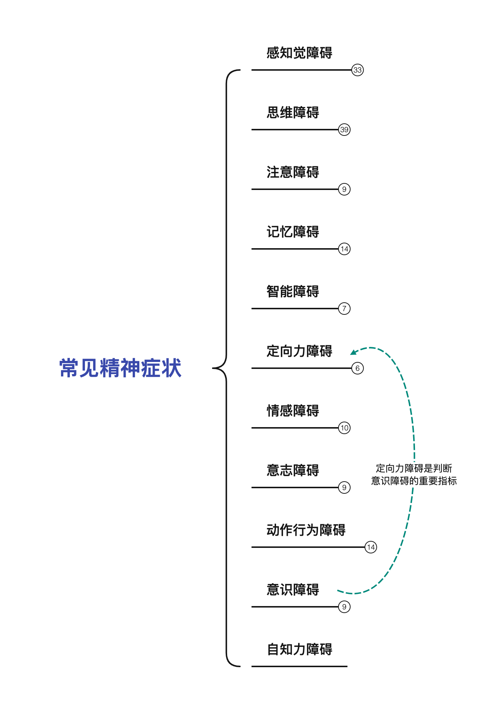
- 1.
感知觉障碍
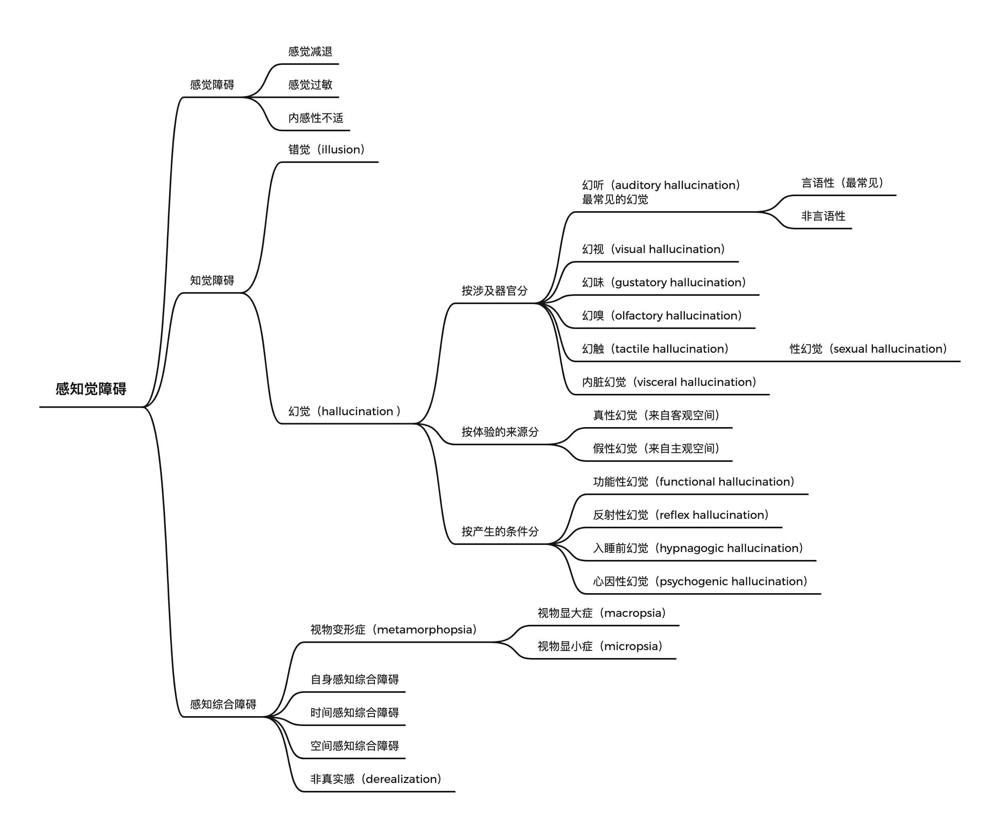
- 2.
思维障碍
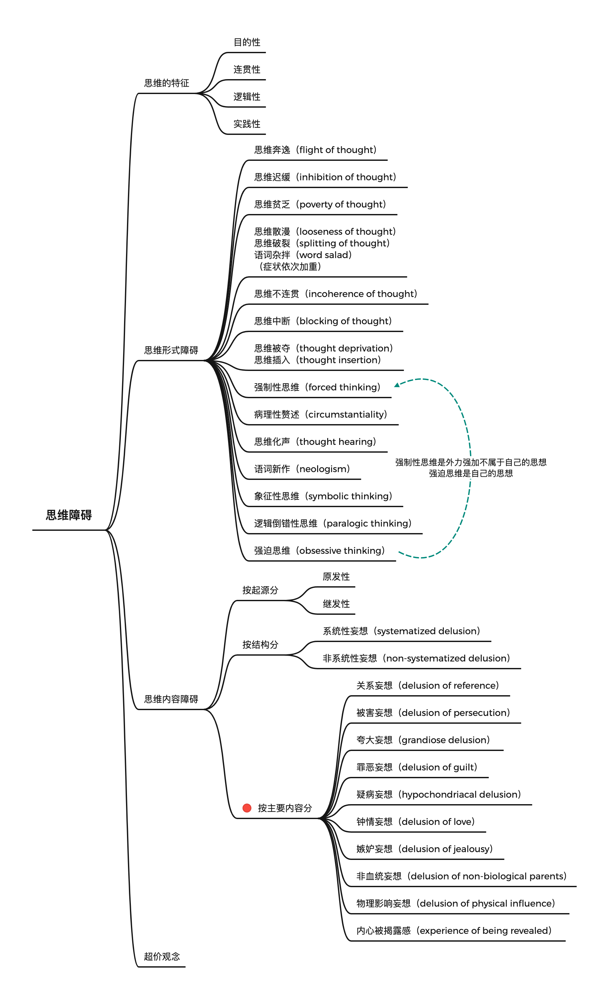
- 3.
注意障碍
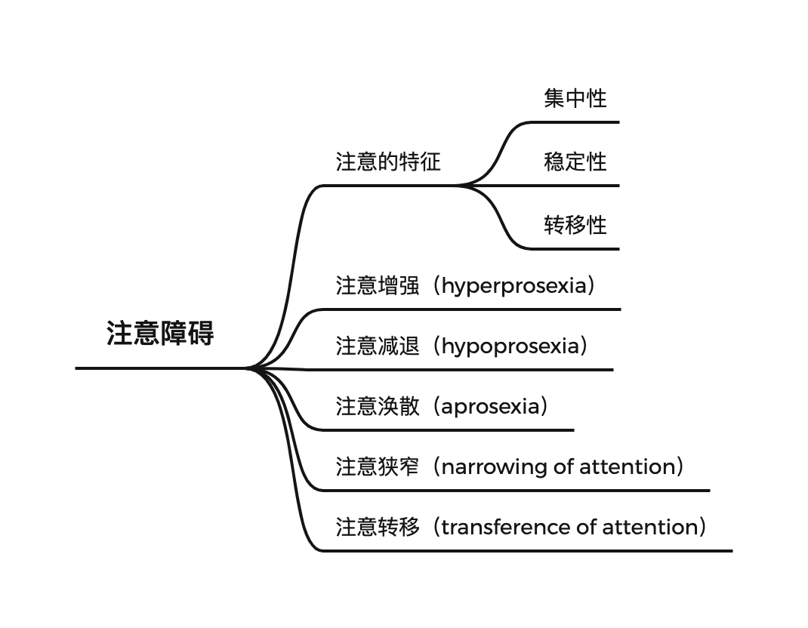
- 4.
记忆障碍
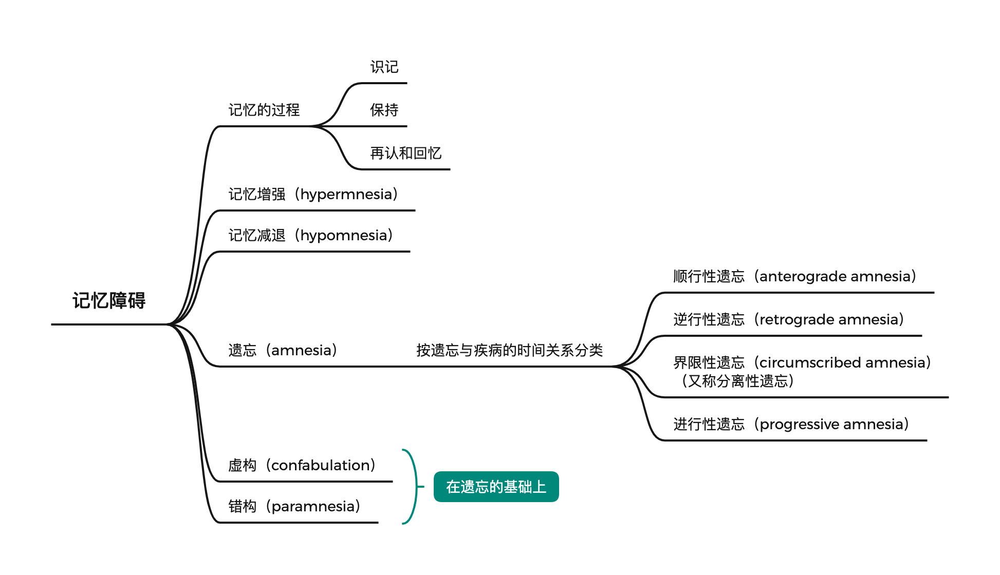
- 5.
智能障碍
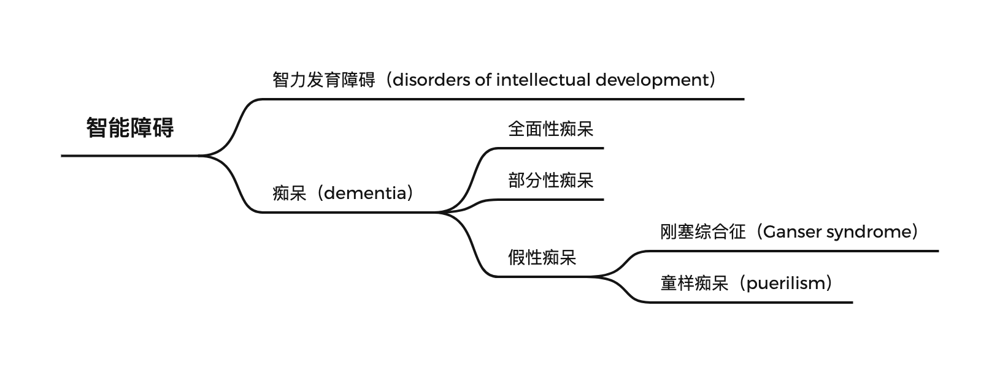
- 6.
定向力障碍
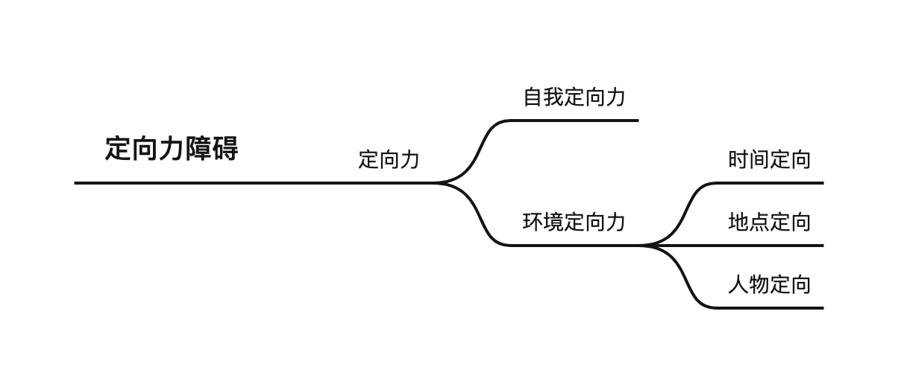
- 7.
情感障碍
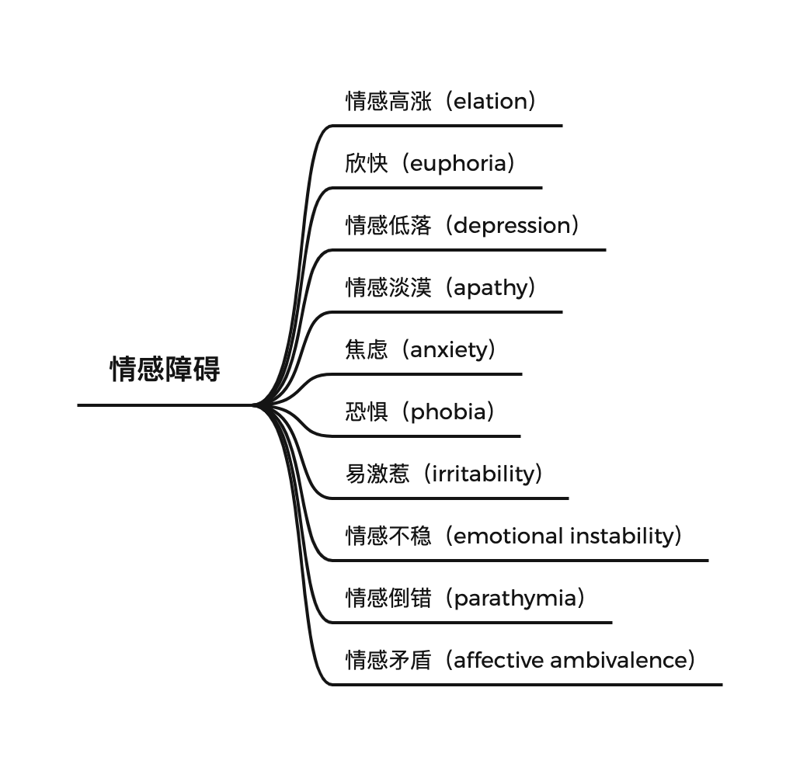
- 8.
意志障碍
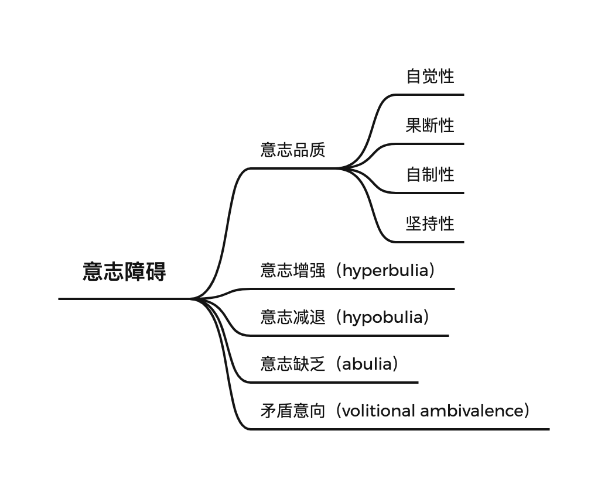
- 9.
动作行为障碍
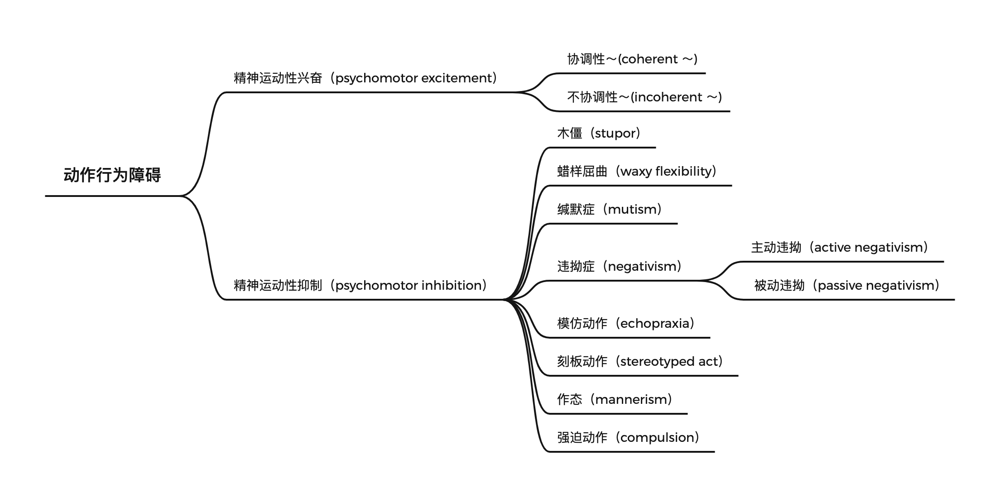
- 10.
意识障碍
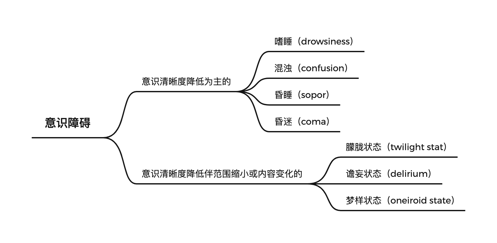
- 11.
自知力障碍
- 1.
- 3.
常见精神疾病综合征
- 1.
幻觉妄想综合征（hallucinatory-paranoid syndrome）：以幻觉为主，并在幻觉的基础上产生相应的妄想，幻觉和妄想联系紧密,且相互影响。
- 2.
躁狂综合征（manic syndrome）：以情感高涨、思维奔逸和活动增多为特征。主要见于躁狂发作。
- 3.
抑郁综合征（depressive syndrome）：以情感低落、思维迟缓和活动减少为特征。主要见于抑郁发作。
- 4.
紧张综合征(catatonic syndrome)：突出的症状是患者全身肌紧张力增高
-
紧张性木僵：常有违拗症、刻板言语及刻板动作、模仿言语及模仿动作、蜡样屈曲等症状。木僵状态可持续数日或数年，可无任何原因地转入兴奋状态。而兴奋状态持续较短暂，发作后往往再次进入木僵状态。
-
紧张性兴奋：突然爆发的兴奋激动和暴烈行为
-
- 5.
遗忘综合征：又称为柯萨可夫(Korsakoff's syndrome),患者无意识障碍，智能相对完好，主要表现为近事记忆障碍、定向力障碍和虚构
- 1.